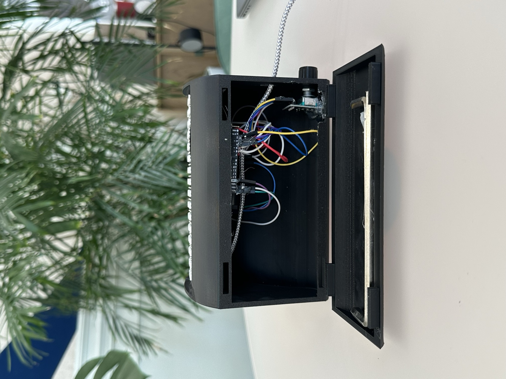
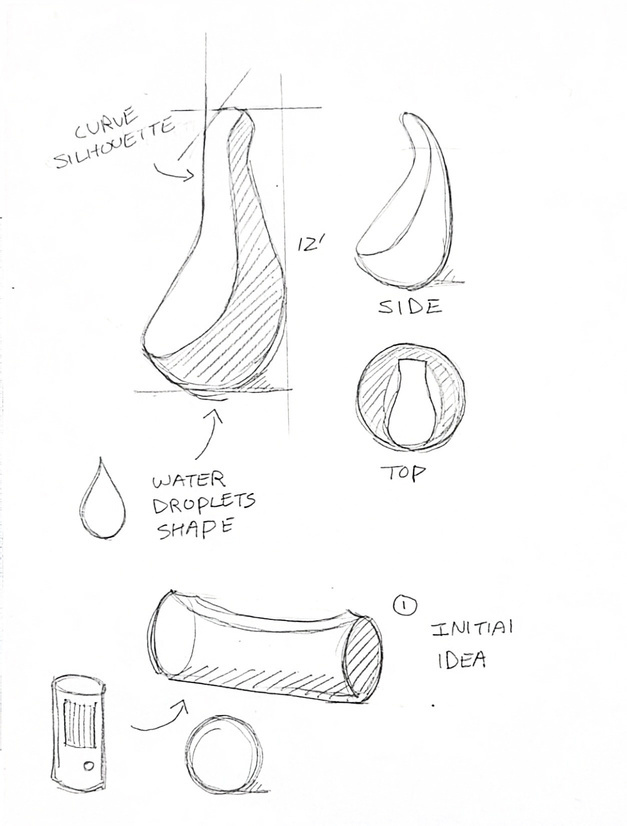
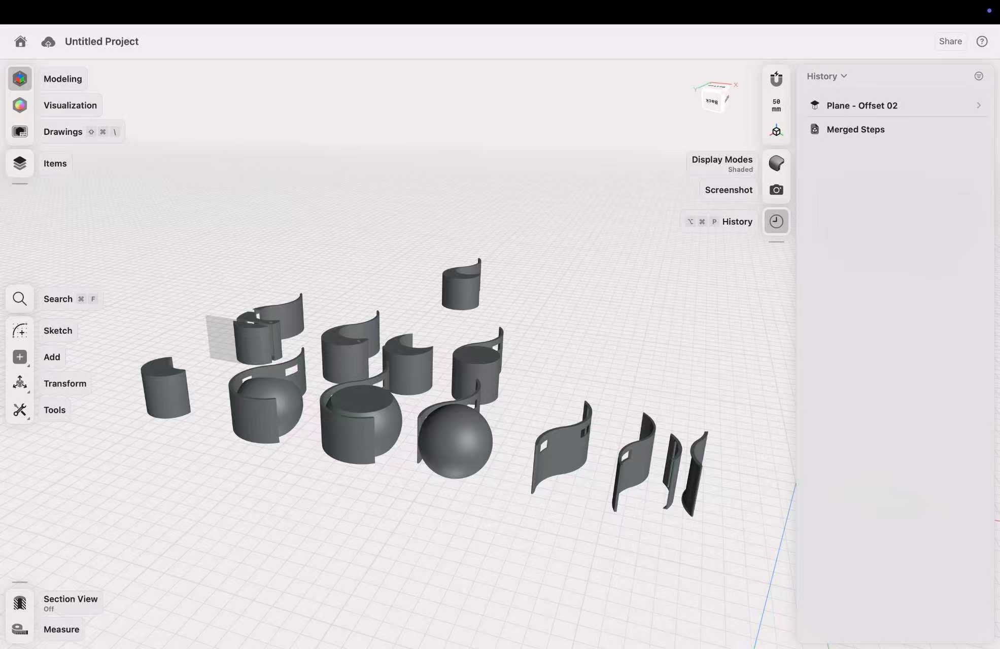
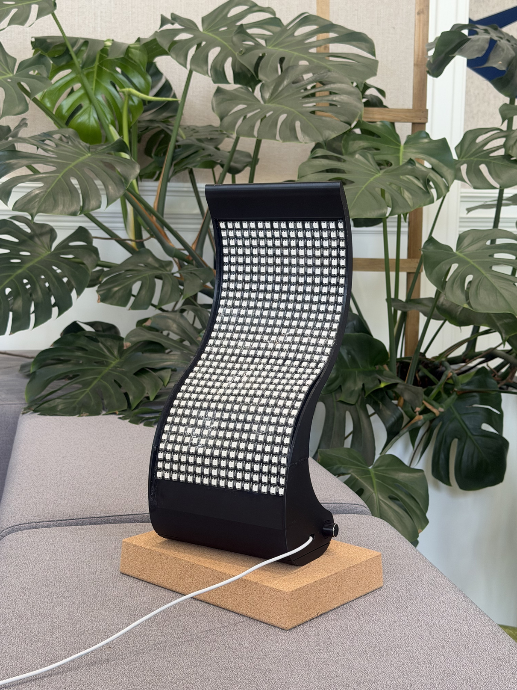

01
Spatial input
Tilt becomes motion.
The object’s orientation changes; the illuminated particles redistribute across the matrix.
02 / PRODUCT DESIGN · PHYSICAL COMPUTING
Water. Made visible.
A movement in your hand.
A response in light.
An Arduino-powered object that turns physical input into a shifting field of light, exploring a more tangible relationship with water.
See the prototype in motionThe design question
Droplet explores water awareness through play. Tilting the object moves its luminous particles; turning a physical control changes the display. The intended invitation is to notice, interact and reflect.
A functional interaction prototype.
Water-use feedback is the design concept, not a verified live water-meter connection.
01 / Interaction in motion
Three prototype interaction demonstrations.
Real prototype footage, continuously looping.
Spatial input
The object’s orientation changes; the illuminated particles redistribute across the matrix.
Rotary input
A separate tactile control increases or decreases the illuminated fill shown in the demonstration.
Water-use scenario
A handwashing scenario demonstrates the intended feedback: the displayed water level decreases as water is used. A concept demonstration, not a verified live water-meter connection.
02 / Inside the Arduino logic
The Arduino translates measured acceleration into flow between cells on a 32 × 16 virtual water grid, then maps that grid onto two LED panels.
The final code reads all three acceleration axes. X and Y drive the two-dimensional simulation; Z is read but is not used in its flow calculation. This is an input mapping, not a perspective projection.

The MPU6050 communicates with the Arduino over I²C. It reads ax, ay and az; the final program uses the X and Y acceleration components to drive motion on the display.
Normalize the sensor values, multiply them by 2.5 and constrain the result. The sign changes flow direction; magnitude changes its strength.
gx = clamp((ax / 16384.0) × 2.5, −2.5, 2.5)gy = clamp((ay / 16384.0) × 2.5, −2.5, 2.5)Condensed notation for the operations in the final sketch.
Each cell stores a value from 0–255. Neighbor differences and the tilt input determine transfer along each grid axis; diffusion adds local mixing.
flowX = 0.35 × (a − b) + 8 × gxflowY = 0.35 × (a − b) + 22 × gyHere a and b are neighboring cell values. Integer transfers are limited to ±20 horizontally and ±30 vertically per calculation.
Columns 0–15 address the first panel; columns 16–31 address the second. Alternating row direction matches each panel’s serpentine wiring. Smoothed intensity and separate on/off thresholds reduce visual flicker.
The encoder changes the target fill by 16 full-cell equivalents per detected increment. A temporary side bar shows percentage; inactivity dims brightness toward 50% after two seconds.
int XYpanel(int x, int y) {
if (y % 2 == 0) return y * PANEL_W + x;
else return y * PANEL_W + (PANEL_W - 1 - x);
}Exact excerpt from DEA3308GPFinal2screen.ino. This page follows that final sketch rather than the earlier, simpler code screenshots in the presentation. Hardware operation is illustrated by the original video; the source was inspected, not recompiled or bench-tested here.
03 / Design development
A concept-first pathway:
frame, sketch, build, refine.

01 / Form exploration
Sketches explored a water-inspired body and the relationship between the display, enclosure and hand.

02 / Physical prototyping
Digital form studies, Arduino wiring and print iterations developed the object around its interactive display.

03 / Integrated prototype
The curved enclosure supports a unified object: a moving light field, a tilt-responsive body and a rotary control.
Design intent & evidence
The project draws on positive design and savoring: making sensory detail noticeable, bringing attention to the present, and encouraging appreciation of everyday resources.
The supplied materials document a working interaction and a design process, not a participant study or measured water savings. Those outcomes would require separate evaluation.
See the complete project
The full demonstration, with its original sound and context.